犬糖尿病的照護光譜選項（Establishing Spectrum of Care Options in Canine Diabetes Mellitus）
主講：Jocelyn Mott, DVM, DACVIM (SAIM), FACVIM（犬貓糖尿病）
2026 年 10 月 6 日｜VET-KU × Texas A&M 內科研討會｜場次 07
⭐ 必記原則
- 犬糖尿病的死因多半是飼主放棄，不是治不好
- 確診時 10–40% 被安樂死，37–60% 活不到 1 年
- 治療目標是生活品質與臨床症狀，不是血糖數字
- 照護光譜：在實證範圍內，依飼主預算與時間選方案
- 講者偏好 Degludec：每單位約 $0.05，85% 一天一次
- 最重要的監測工具：臨床症狀與體重（ALIVE DCS）
- 飼主真的沒錢時，可以只靠 DCS 加體重監控
- 平價市售飼料可以取代糖尿病處方飼料
- 前 6 個月是飼主支持最關鍵的時期
- 四大面向（飲食、監測、胰島素、回診）自由搭配
核心訊息
▾- 本場的 SOC 指 Spectrum of Care（照護光譜），不是 Standard of Care。
- 犬糖尿病是可以治療的慢性病，但存活時間偏短、安樂死比例偏高，主因是飼主的負擔：費用、時間、生活被綁住。
- 演講把費用拆成四塊：胰島素、飲食、監測、獸醫診療，每一塊都提供從便宜到完整的選項，最後用「Mix and Match」組合成個別化方案。
1. 為什麼照護光譜對犬糖尿病很重要
▾存活與安樂死
| 時間點 | 比例 |
|---|---|
| 確診當下被安樂死 | 10–40% |
| 確診後 30 天內 | 15–20% |
| 活不到 1 年 | 37–60% |
出處：Tardo 等（JVIM，新診斷糖尿病犬的存活與預後因子，獸醫教學醫院）、Fall 等（瑞典族群資料的發生率、存活與品種分布）。
Big Pet Diabetes Survey（超過 1000 位獸醫）
每 10 隻糖尿病寵物有 1 隻在確診時被安樂死，1 年內再多 1 隻。
| 確診時安樂死的原因 | 治療第一年內安樂死的原因 |
|---|---|
| 費用、年齡、併發疾病、寵物福祉、對飼主生活的影響 | 治療沒反應或飼主配合度差、照顧者疲乏、好幾年都要維持固定作息、治療與監測的金錢和時間負擔 |
糖尿病犬生活品質工具（Niessen 等，JVIM 2012）
飼主最在意的前 10 項：
- 整體擔憂
- 少了陪親友的時間
- 擔心狗的視力
- 無法把狗送去寄宿
- 擔心低血糖
- 融入社交生活
- 費用
- 擔心能不能長期照顧下去
- 配合工作生活
- 活動受限
糖尿病犬飼主的治療「障礙」
生活型態要調整、費用、怕低血糖、作息被綁住、家人朋友不支持、要打胰島素、生活品質、監測方式、期待不切實際、寵物福祉。
出處：Niessen 等 JVIM 2010、2012；Hazuchova 等 JFMS 2018。
2. 什麼是照護光譜與實際可行的治療目標
▾定義（Fingland 等，JAVMA 2021）
一段連續、都可接受的獸醫照護範圍：以實證醫學為基礎，同時回應飼主的期待與經濟限制。
💡 照護方案不是只有「最好」和「放棄」兩種，中間有很多合理的選項。
讓飼主願意投入治療
良好溝通 ＋ 充分衛教 ＋ 穩固的獸醫支持 ＝ 飼主配合度、遵從度和信心都很好。
實際可行的治療目標
- 改善飼主與寵物的生活品質
- 改善臨床症狀
- 預防 DKA 和低血糖
- 讓體態評分（BCS）恢復正常
3. 費用與犬用胰島素
▾費用結構與 FDA 核准的犬用胰島素
- 美國犬糖尿病的四大支出：胰島素、飲食、監測、獸醫診療。
- FDA 核准犬用：Vetsulin®／Caninsulin®（豬 lente，40 U/mL）、ProZinc®（PZI，重組人類胰島素，40 U/mL）。都要搭配 U-40 針筒。
Lente、NPH、PZI（中效懸浮型）的問題
- 是懸浮液，抽取前要輕輕滾動回溶（Vetsulin 要搖）。
- 在皮下儲積處溶解的速度不規則、難以預測 → 劑量不準、作用曲線變異大。
- 打針同時餵食時，需要胰島素的時間和實際作用時間對不上（高峰約在注射後 3–6 小時）。
- 一天兩次（NPH 每 8–12 小時一次）。
為什麼選基礎型（basal）胰島素
- 比懸浮液可預測、不用回溶、吸收穩定、每天變異小。
- 一天一次，飼主時間比較彈性。筆型比針筒加藥瓶精準。
- 不需要讓胰島素高峰對上碳水吸收高峰。
- 低血糖風險低；人醫可減少夜間低血糖。
- 給藥時間不必太精準：人可以任何時間打；狗可能前後 ±2–3 小時（講義打問號，尚未確證）。
4. 基礎型胰島素的研究
▾| Glargine U300（Gilor 等，2024） | Degludec（Tresiba®） | |
|---|---|---|
| 病例數 | 95 隻 | 33 隻（6 隻新診斷、27 隻已在治療），用 FreeStyle Libre 監測 |
| 一天一次就夠 | 約 60% | 85%（28 隻）；5 隻需 q12h 或加一劑 NPH |
| 達到控制 | 約 2 週 | 中位數 14 天（3–32 天） |
| 最終劑量 | — | 中位數 1.3 U/kg（0.4–2.2） |
| 低血糖 | — | 只有 1 次臨床低血糖 |
| 控制品質 | 多數控制良好 | 76% 極佳或很好 |
- Degludec 起始劑量：0.5 U/kg，每日一次。【更正】講義寫「0.5 mg/kg」，胰島素應為 U/kg。
- 💡 最終劑量中位數 1.3 U/kg，比 lente／NPH 的常用劑量高，調整時不要因為數字偏高就不敢往上加。
5. 胰島素費用比較與講者偏好
▾胰島素很貴
- 新聞：〈研究顯示：儘管政策改變，胰島素配給（省著用）情況依然存在〉（2025/11）。
- 全球胰島素價格：美國每瓶約 $99，其他國家多半 $7–21；每瓶的生產成本只要約 $2–4。原因是美國缺乏政府管制。
📷 現場 Insulin Cost Comparison（2025 年 3 月，美國佛州）
| 胰島素 | 濃度 | 瓶裝 | 瓶裝每單位 | 筆型 | 筆型每單位 |
|---|---|---|---|---|---|
| Vetsulin（豬 lente） | 40 U/mL | $75.00／10 mL | $0.19 | $255.99／10×2.7 mL | $0.24 |
| Novolin-N | 100 U/mL | $57.53／10 mL | $0.06 | $90.60／5×3 mL | $0.06 |
| ReliOn NPH 與 70/30 | 100 U/mL | $24.88／10 mL | $0.02 | $42.88／5×3 mL | $0.03 |
| Toujeo（Glargine U300） | 300 U/mL | 無 | — | $367.08／3×1.5 mL | $0.27 |
| Degludec | 100 U/mL | $133.00／10 mL | $0.13 | $71.99／5×3 mL | $0.05 |
| ProZinc | 40 U/mL | $229.99／20 mL | $0.29 | 無 | — |
| Lantus（Glargine） | 100 U/mL | $139.99／10 mL | $0.14 | $64.99／1×3 mL | $0.22 |
| Semglee（Glargine） | 100 U/mL | $295.11／10 mL | $0.30 | $106.40／1×3 mL | $0.35 |
| Basaglar（Glargine） | 100 U/mL | 無 | — | $94.34／1×3 mL | $0.31 |
📷 現場版本只有 Vetsulin $0.19 有藍框；PDF 裡 ReliOn 的紅圈、Degludec 的綠圈、ProZinc 的藍框可能是講解時才出現的動畫標註。
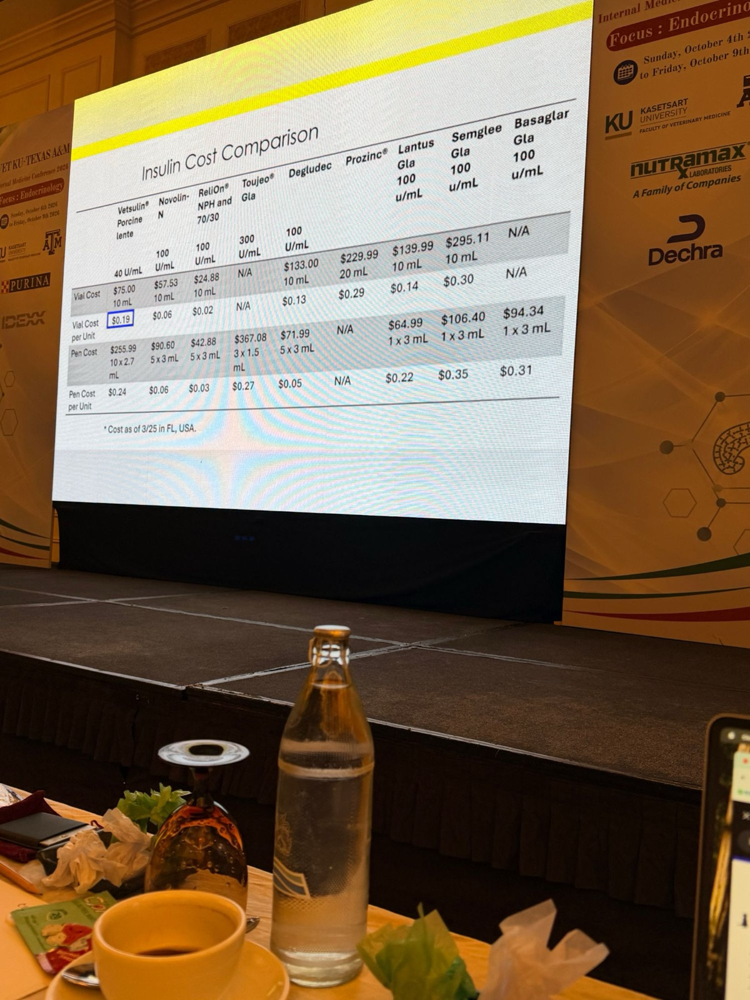
📷 現場 My Preference for Insulin
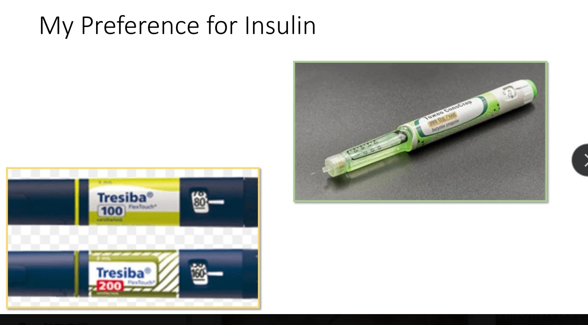
投影片放了兩種基礎型胰島素的筆，其中講者更偏好 Degludec，理由如下：
| 理由 | Degludec（Tresiba） | Glargine U300（Toujeo） |
|---|---|---|
| 筆型每單位 | $0.05，接近 NPH | $0.27，約貴 5 倍 |
| 一天一次就夠的比例 | 85% | 約 60% |
| 💡 小型犬抓劑量 | 有 U-100，容易微調 | U300 濃縮，低劑量難抓 |
- 💡 Degludec 在皮下形成多聚六聚體儲積、慢慢釋放；人醫半衰期約 25 小時，作用曲線平、給藥時間彈性大。
- 💡 一句話：接近 NPH 的價格 ＋ 基礎型胰島素的穩定度 ＋ 更多狗只要一天打一次，符合照護光譜「有效又負擔得起」的精神。預算最緊時，ReliOn NPH 仍是最便宜的選項。
- 💡 Degludec 的機轉、U-100／U-200 換算見 02 犬糖尿病：超越 NPH 第 11 節。
6. 糖尿病臨床評分（ALIVE Diabetic Clinical Score）
▾- 監測方法：糖尿病臨床評分（DCS）、CGM、果糖胺、血糖曲線。
- 犬糖尿病最重要的監測工具是臨床症狀和體重！
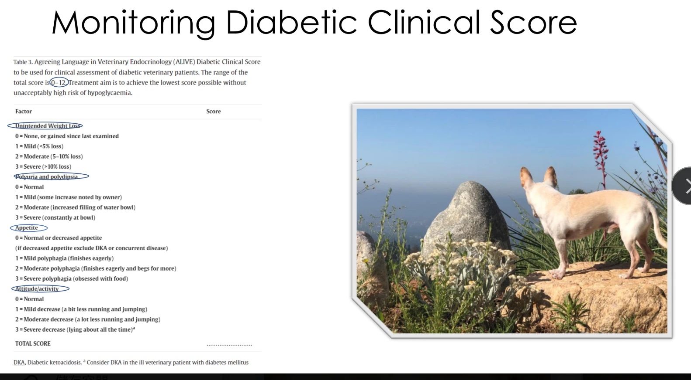
總分 0–12 分。目標是在低血糖風險還能接受的前提下，分數越低越好。
| 項目 | 0 分 | 1 分 | 2 分 | 3 分 |
|---|---|---|---|---|
| 非預期的體重減輕 | 沒有，或比上次檢查增加 | 輕度（< 5%） | 中度（5–10%） | 嚴重（> 10%） |
| 多尿多渴 | 正常 | 輕度（飼主覺得有點增加） | 中度（水碗要更常加水） | 嚴重（一直守在水碗旁） |
| 食慾 | 正常或食慾下降* | 輕度多食（很積極地吃完） | 中度多食（吃完還會討食） | 嚴重多食（滿腦子都是食物） |
| 精神／活動力 | 正常 | 輕度下降（跑跳稍微變少） | 中度下降（跑跳明顯變少） | 嚴重下降（整天躺著）** |
** 糖尿病動物看起來很不舒服時，要考慮 DKA。
💡 ALIVE 是歐洲獸醫內分泌學會（ESVE）於 2016 年發起、比較內分泌學會（SCE）背書的共識計畫，用改良式 Delphi 法統一犬貓糖尿病的名詞定義。
- 💡 實務做法：請飼主每週在家量體重、用這 4 項自評打分，email 或 LINE 回報，作為調整胰島素的依據（見第 10 節）。
- 💡 「食慾」和「活動力」分數低，不一定代表控制得好，要搭配體重一起看。
7. 血糖曲線、果糖胺與 HbA1c
▾血糖曲線的日間變異（Fleeman & Rand, JAVMA 2003;222:317–321）
- p.24 反諷：「血糖曲線就能告訴我所有需要的資訊。」旁邊的 CGM 圖顯示一天中有好幾次低點，間隔採血很容易漏掉。
- 設計：同一隻狗 2 天內各做一次血糖曲線，每 2 週重複一次，共 3 次；胰島素劑量、時間、食物、餵食時間都相同。
- 結論：糖尿病犬連續血糖曲線的各項參數，每天之間差異很大。單憑一次血糖曲線調劑量並不可靠。
果糖胺
| 怎麼用 | 限制 | 會受影響的情況 |
|---|---|---|
| 看同一隻狗的趨勢；用同一家實驗室與方法；搭配 DCS、體重、理學檢查判讀 | 分級血糖控制的準確度有限；看不到血糖最低點、胰島素作用時間、對注射的反應 | 蛋白質異常、氮血症、高血脂、類固醇治療、未治療的甲狀腺低下 |
📷 現場 果糖胺 vs HbA1c：反映多久的血糖、多久調一次胰島素（講義沒有這頁）
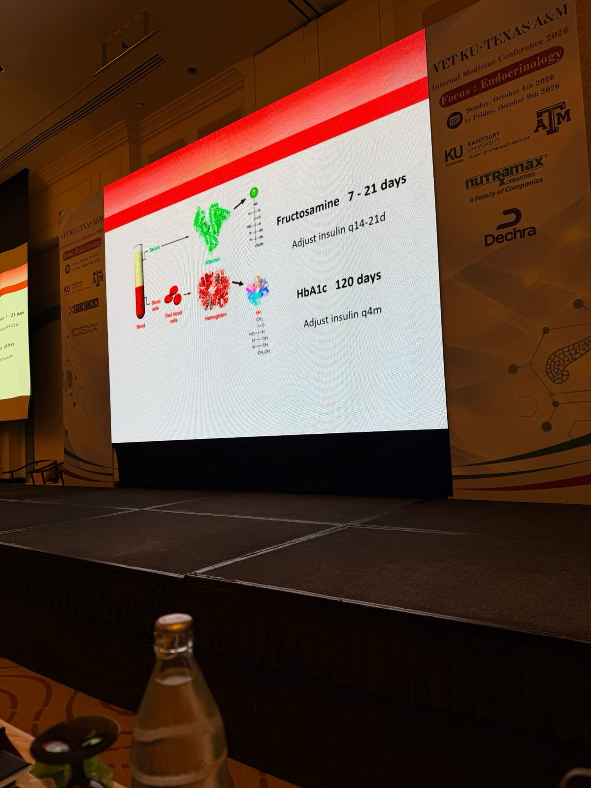
| 指標 | 醣化的蛋白 | 反映多久的平均血糖 | 依此調整胰島素的間隔 |
|---|---|---|---|
| 果糖胺 | 血清蛋白（主要是白蛋白） | 7–21 天 | 每 14–21 天 |
| HbA1c | 紅血球內的血紅素 | 120 天 | 每 4 個月 |
- 💡 間隔取決於蛋白的壽命：白蛋白半衰期短，所以果糖胺反映近 1–3 週；紅血球壽命約 110–120 天，所以 HbA1c 反映近 4 個月。改劑量後太早複檢，數值還來不及反映新的劑量。
- 💡 對應第 11 節 Mix and Match：「每 2 週回診驗果糖胺」和「每 3 個月回診驗 HbA1c」兩個回診選項，就是依這兩個時間尺度設計的。
- 💡 貧血、紅血球壽命縮短（例如溶血）或近期輸血時，HbA1c 會被低估；低白蛋白時果糖胺會偏低（見上表）。
8. CGM 連續血糖監測
▾講者偏好 CGM；原理
- p.27 講者偏好的監測方式：狗身上貼 Libre 感測器。
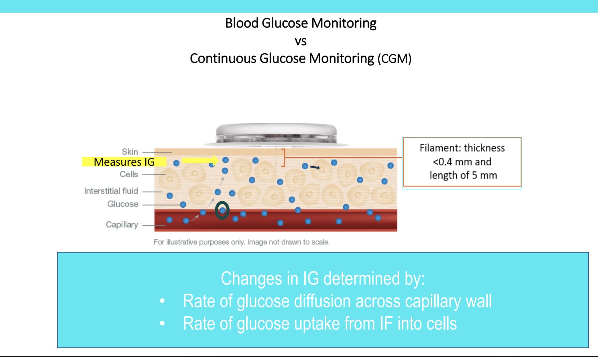
- CGM 量的是組織間液葡萄糖（IG），不是血糖。感測絲厚度 < 0.4 mm、長 5 mm。
- IG 的變化取決於：葡萄糖穿過微血管壁的擴散速度、細胞從組織液攝取葡萄糖的速度。
- 探針：葡萄糖穿過半透膜 → 接觸葡萄糖氧化酶層 → 產生與 IG 成正比的電流 → 即時傳到接收器。
📷 現場 FreeStyle Libre 2 vs Libre 3（講義沒有這兩頁）
| FreeStyle Libre 2（Abbott） | FreeStyle Libre 3 | |
|---|---|---|
| 校正 | 不需要校正 | 不需要校正 |
| 配戴時間 | 最長 15 天 | 最長 15 天 |
| 讀數方式 | 自動量測，但每 8 小時要掃描一次感測器 | 不用掃描：每分鐘量一次 IG，自動傳到手機 |
| 其他 | 量測範圍 40–500 mg/dL；已在糖尿病犬與 DKA 犬驗證 | 體積比前代小 60%；一體式植入器；人醫準確度更高 |
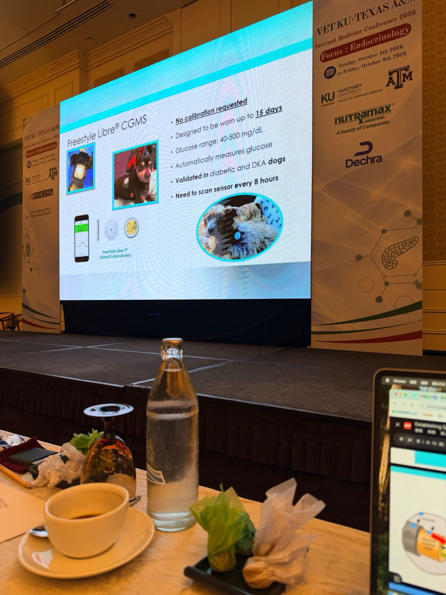
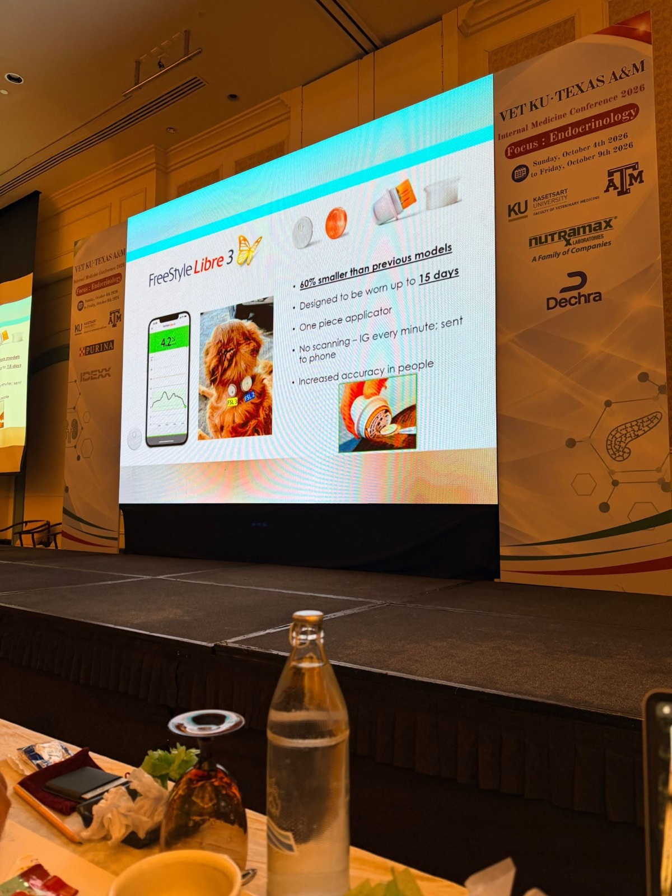
- 💡 Libre 2 每 8 小時要掃一次，是因為感測器只存最近 8 小時的資料；超過 8 小時沒掃，中間的曲線就會缺一段。夜間或飼主上班時特別容易漏掉。
- 💡 Libre 3 自動上傳，搭配 LibreView 就能做到第 10 節的「獸醫線上看數據、不用回診」。
- 💡 Libre 3 手機畫面的 4.2 是 mmol/L，換算約 76 mg/dL（× 18）。看數據前先確認 app 的單位。
迷思：「CGM 不準，跟血糖都不一樣」
- IG 永遠落後 BG。血糖變化小時 IG 接近 BG；快速大幅變動時兩者差距變大。
- 延遲時間：狗約 5–12 分鐘、貓約 5–15 分鐘（投影片左邊是貼著 Libre 的狗，右邊是貓）。【更正】原本寫成「人醫」，依投影片照片應為狗和貓。
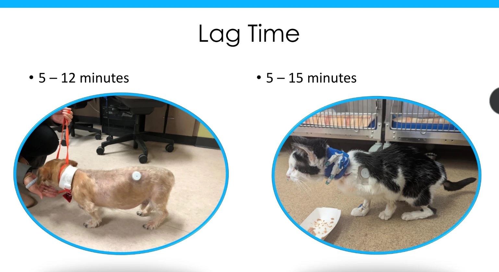
- 貓的研究：靜脈給 0.5 g/kg 葡萄糖（綠箭頭）後，血糖瞬間衝到約 600 mg/dL，IG 慢慢跟上，約 30 分鐘（紅箭頭）兩者才接近。
- 血糖快速變動時，延遲期會拉長。平常穩定時延遲只有 5–15 分鐘，但像打葡萄糖、剛吃飯、胰島素剛發揮作用這種血糖急升急降的時候，CGM 讀值會明顯落後。
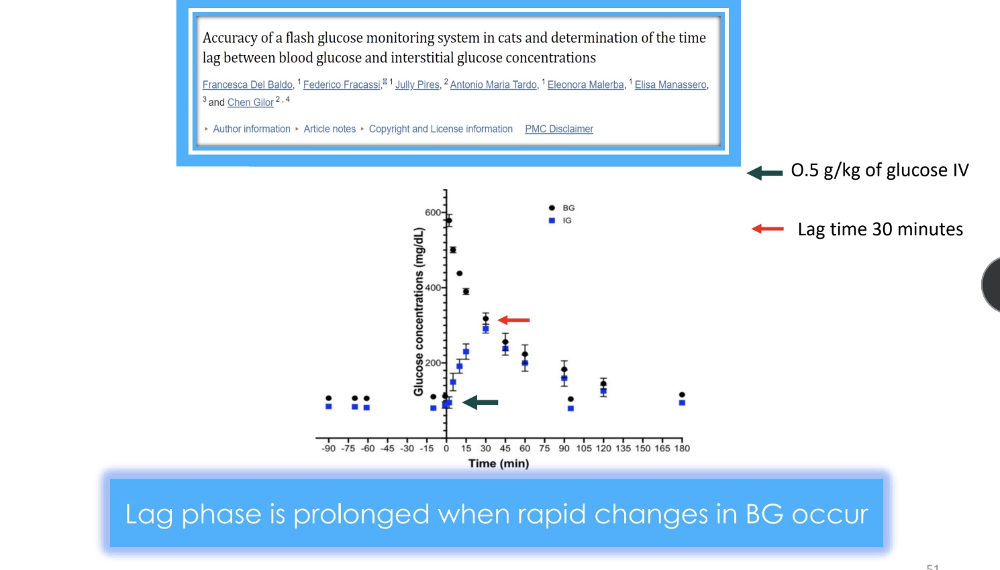
💡 研究納入 20 隻糖尿病貓和 7 隻健康貓。IG 和 BG 高度相關，但個別讀值和血糖相差在 15 mg/dL 以內的比例不到一半，所以要看趨勢，不要只看單一數字。
- 💡 臨床意義：懷疑低血糖、或狗有低血糖症狀時，先用血糖機確認，不要只等 CGM 的讀數。
📷 現場 研究：FreeStyle Libre 數據指標能評估犬糖尿病控制嗎？（講義沒有這頁）
Del Baldo F, Tardo AM, Gilor C, Mott J, Da Vela C, Pergolese V, Fracassi F. Freestyle Libre-derived metrics in assessing glycemic control in diabetic dogs. J Vet Intern Med. 2025;39(4):e70151.（最早在 2021 ECVIM-CA 線上年會發表；講者本人是共同作者）
- 目的：描述各種 Libre 數據指標，看它們能不能用來監測糖尿病犬的血糖控制。
- 對象：85 隻飼主飼養的糖尿病犬。
- 分組依據就是第 6 節的 ALIVE DCS：總分 0 分 → 控制良好；大於 0 分 → 控制不佳。
| 指標 | 定義 | 控制良好組 vs 控制不佳組 |
|---|---|---|
| TIR%（Time in range） | IG 落在 70–250 mg/dL 的時間比例 | 控制良好組較高 |
| TAR%（Time above range） | IG > 250 mg/dL 的時間比例 | 控制良好組較低 |
| TBR%（Time below range） | IG < 70 mg/dL 的時間比例 | — |
| MG（Mean glucose） | 平均 IG | 控制良好組較低 |
| CV%（變異係數） | 血糖波動程度 | 有低血糖讀值的狗 CV% 較高（44% vs 28%） |
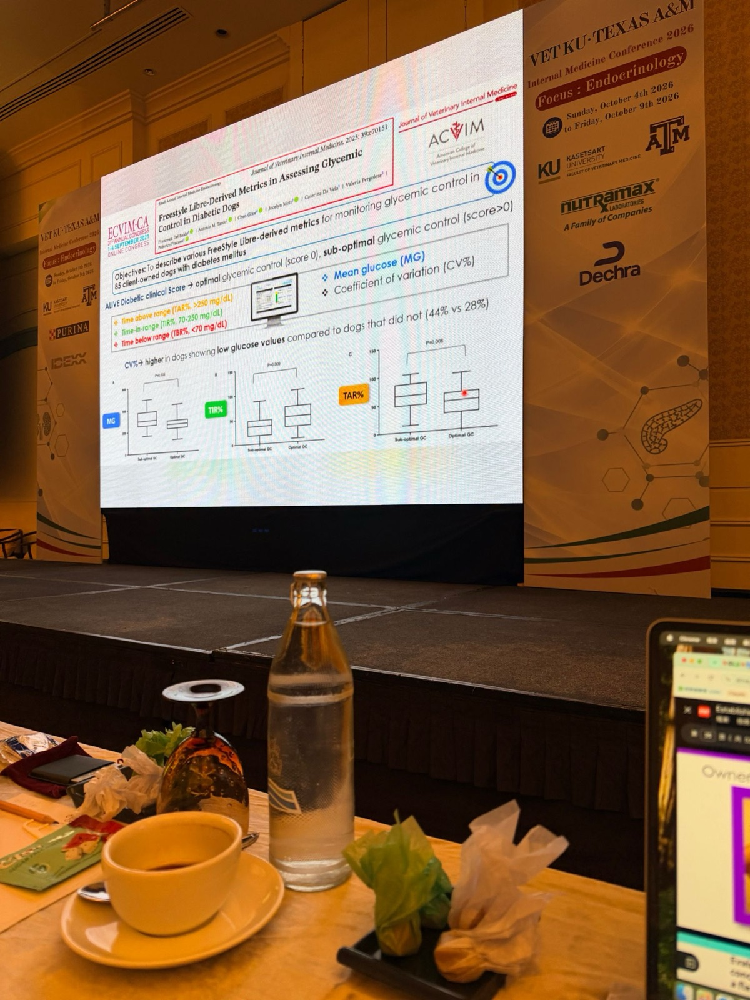
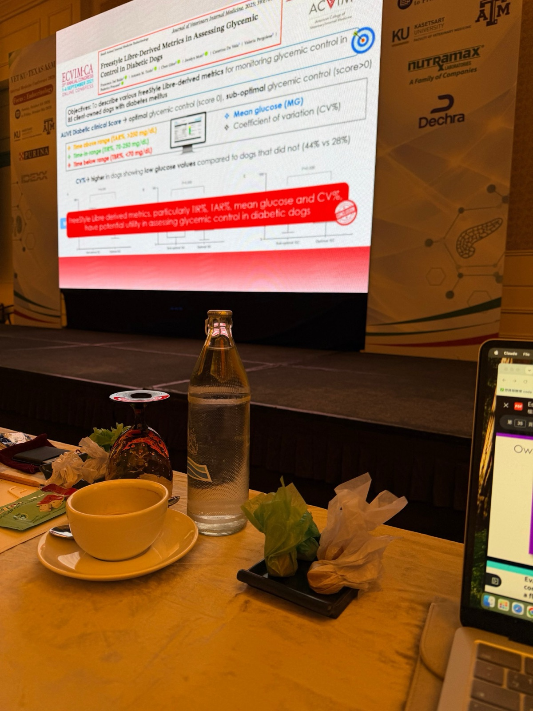
- 💡 這篇研究把兩種監測方式連起來：只用 DCS（最便宜）和用 CGM 指標（最完整）評估的控制好壞方向一致。這也支持了照護光譜的做法：預算少的飼主只看 DCS，有預算的再加 CGM 看 TIR 和 CV。
- 💡 CV% 高代表血糖波動大、比較容易低血糖。看 LibreView 報告時，除了平均血糖，也要看 CV%。
CGM 能發現並預防低血糖
- 人（第二型糖尿病，Pazos-Couselo 等）：CGM 抓到的低血糖事件是指尖自我監測的 5 倍。
- 狗（Del Baldo 等）：FGMS 偵測到 60% 的低血糖事件，攜帶式血糖機只有 9%。
- 人醫：使用 CGM 和較少低血糖、較短低血糖時間、較多時間落在目標範圍有關。
飼主看到數據的壓力；健康動物也會有低 IG
- 飼主看太多數字會焦慮（Owner Reaction to Data：STRESS）。
- 健康犬（Brisman 等）：也有一部分 IG 讀值 < 70 mg/dL（平均約 3%），多在夜間。
- 健康貓（Schuppisser 等）：83% 在白天或夜間出現低 IG，最低到 39 mg/dL，但沒有任何低血糖症狀。
- 💡 CGM 上看到偏低的數值，不一定是真的臨床低血糖，不需要一看到就恐慌，要搭配臨床症狀判讀。
- 💡 可能的原因：
- 壓迫性假低值：動物睡覺時壓到感測器，局部組織液循環變差，讀值會假性下降，常見於夜間。
- 剛貼上的頭 24 小時讀值比較不穩定。
- IG 本來就可能略低於 BG，而且 CGM 在低血糖範圍的準確度比較差（見上方 Del Baldo 2021：個別讀值和血糖差距在 15 mg/dL 以內的不到一半）。
- 💡 實務處理：看到低值時，先看動物有沒有症狀（虛弱、發抖、運動失調、抽搐），再用血糖機量一次血糖確認。沒有症狀、血糖機正常，就不需要因為單一低值減胰島素。持續好幾個小時的低值，或每天固定時段都出現的低值，才比較有意義。
- 💡 先跟飼主講清楚這一點，可以減少看到數據的焦慮（呼應上方 Owner Reaction to Data），也避免飼主自己亂減劑量。
📷 現場 飼主怎麼看 FGMS？優點與缺點（講義沒有這頁）
Re M, Del Baldo F, Tardo AM, Fracassi F. Monitoring of diabetes mellitus using the flash glucose monitoring system: the owners' point of view. Vet Sci. 2023;10(3):203. doi:10.3390/vetsci10030203（問卷調查 50 位糖尿病犬貓的飼主）
| 🟢 優點 | 🔴 缺點 |
|---|---|
| 血糖控制更好（92%） 比較安心（88%） 比血糖曲線好操作，寵物的壓力和疼痛也比較少（80%） |
感測器提早脫落（40%）：狗的感測器平均只撐 5–10 天 長期費用（36%） 購買感測器（34%） 非常瘦的貓狗有氣胸風險 焦慮增加（12%） |
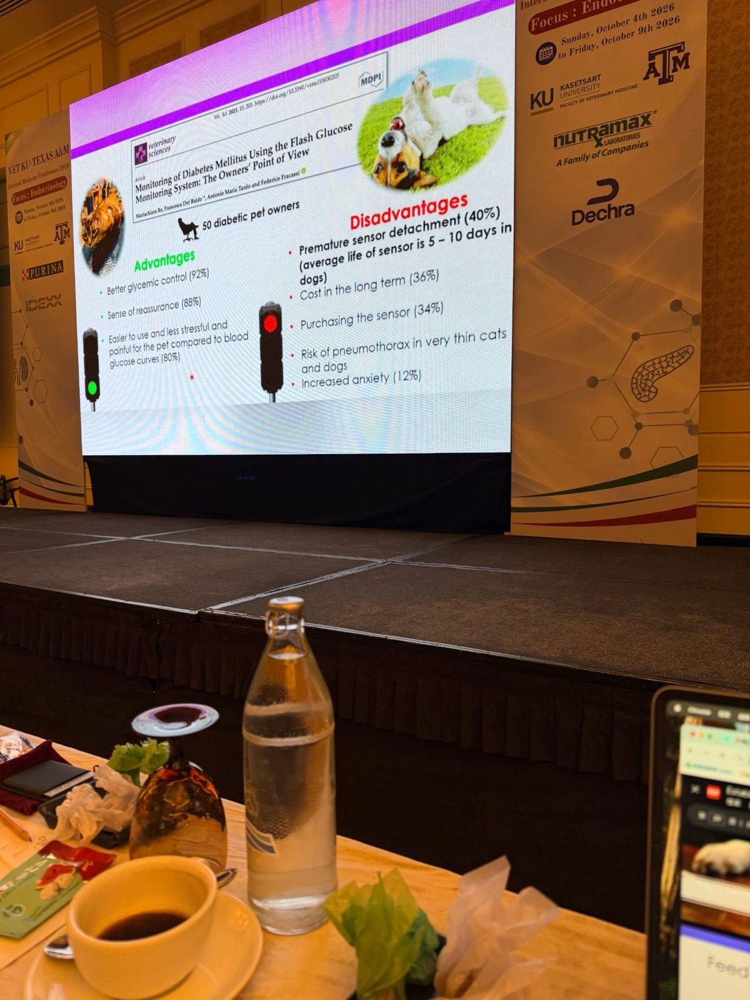
- 💡 原因：感測絲長約 5 mm（見本節開頭的原理圖），非常瘦的動物在胸壁的皮膚加皮下組織可能不到 5 mm，感測絲有機會穿進胸腔。已有貓貼 CGM 後發生醫源性氣胸的病例報告（Farmer 等，J Vet Emerg Crit Care 2025）。
- 💡 實務做法：用超音波量貼片位置皮膚到肌肉或胸膜的距離，明顯不到 5 mm 就換位置，或改用血糖機監測。貼完後如果出現呼吸急促、呼吸困難，要想到氣胸。
- 💡 狗的感測器平均只撐 5–10 天，沒辦法用滿 15 天，估算飼主的感測器費用時要算進去。
9. 飲食
▾- 餵食目標是讓體態恢復正常：過瘦要增重、過胖要減重。
- 纖維？（Fleeman 等，JSAP 2009;50:604–14）：病情穩定的糖尿病犬吃高纖、中碳水飲食，和中纖、低碳水的一般市售飼料相比沒有明顯優勢。偏瘦的狗不應常規使用高纖、中碳水、中脂飲食。
- 碳水：種類、消化率與含量都會影響餐後血糖。健康犬吃中碳水（25%）比傳統糖尿病處方（55% ME）餐後血糖低；糖尿病犬吃高 GI 碳水時餐後血糖更高。
- 共病：選能處理最嚴重疾病的飲食。例：12 歲已結紮母混種犬，糖尿病＋IRIS 第 III 期腎病 → 腎臟處方（k/d）。
- 適口性：要餵狗願意穩定吃的食物。
10. 獸醫照護與降低成本
▾澳洲基層醫院 2078 例糖尿病犬的安樂死研究（2008–2017）
- 最常見的安樂死原因：生活品質、飼主不能或不願打針、費用。
- 46% 在確診後前 6 個月被安樂死，之後 6 個月只再增加 7%。
讓糖尿病照護更負擔得起
- 減少回診次數。
- 飼主在家量體重、定期回報 DCS，作為調整胰島素的依據。
- 獸醫上 LibreView 線上看 CGM 數據，搭配 DCS 調劑量，不用回診。
- 不再每 3 個月回診，改成飼主每 3 個月自己貼一次感測器，再通知獸醫看數據。
- 教飼主在家自己貼感測器。
- 提供視訊回診。
11. Mix and Match：整合成個別化方案
▾病例 Abby Smith：12 歲已結紮母混種犬，確診糖尿病。請設計具有照護光譜的管理方案。
| 面向 | 選項 |
|---|---|
| 飲食 | 一般市售 ⭐◯／處方 |
| 監測 | DCS 加體重 ⭐◯／CGM ⭐／果糖胺／HbA1c |
| 胰島素 | Caninsulin／ProZinc／NPH ◯／Glargine U100／Glargine U300／Degludec ⭐ |
| 回診 | 初診用 CGM，每天記錄 DCS 與體重，用 1–2 片感測器，之後每 3 個月 1 片 ⭐ 每 2 週回診一次持續 6 個月，驗果糖胺加 DCS 與體重 每 6 個月回診，每月 email 回報 DCS 與體重 ◯ 每 3 個月回診，驗 HbA1c 加 DCS 與體重 |
- ⭐ 講者偏好的組合：市售飼料、DCS 加體重、CGM、Degludec，初期用 CGM、之後每 3 個月一片感測器。
- ◯ 最省錢的組合：市售飼料、只靠 DCS 加體重、NPH（ReliOn）、每半年回診加每月 email。
- 💡 四個面向可依飼主的預算與時間自由搭配，不必整套升級或整套降級。
參考文獻與 Take-home
▾Take-home
- 犬糖尿病的死因多半是飼主放棄，不是治不好。
- 治療目標是生活品質、臨床症狀、避免 DKA 與低血糖，不是漂亮的血糖數字。
- 胰島素：講者偏好 Degludec；預算最緊時用 ReliOn NPH。
- 監測以 DCS 加體重為主，飼主真的沒錢時只用這個也可以；有預算就用 CGM 取代院內血糖曲線。
- 一般市售飼料就可以；有共病時選能處理最嚴重疾病的飲食。
- 減少回診、改成遠距追蹤；前 6 個月給飼主最多支持。
延伸閱讀
- Mott J, Garrett LD, Gilor C. Can implementing spectrum-of-care approaches in management of canine diabetes mellitus improve dog and owner outcomes? J Am Vet Med Assoc. 2025;263(S3):S39–S42. doi:10.2460/javma.25.04.0288
- Rand J, Mott J, Kendall K, Gilor C. Spectrum of veterinary care in feline diabetes mellitus. J Feline Med Surg. 2025. doi:10.1177/1098612X251401500
- Niessen SJM 等. ALIVE: Diabetes mellitus. Vet J. 2022;289:105910. doi:10.1016/j.tvjl.2022.105910（DCS 出處）
- Del Baldo F, Fracassi F, Pires J, et al. Accuracy of a flash glucose monitoring system in cats and determination of the time lag between blood glucose and interstitial glucose concentrations. J Vet Intern Med. 2021;35(3):1279–1287.
- Del Baldo F, Tardo AM, Gilor C, Mott J, et al. Freestyle Libre-derived metrics in assessing glycemic control in diabetic dogs. J Vet Intern Med. 2025;39(4):e70151.
- Re M, Del Baldo F, Tardo AM, Fracassi F. Monitoring of diabetes mellitus using the flash glucose monitoring system: the owners' point of view. Vet Sci. 2023;10(3):203.
- Farmer 等. Iatrogenic pneumothorax in a cat following placement of a continuous glucose sensor. J Vet Emerg Crit Care. 2025.
- Fingland RB 等. Spectrum of care. JAVMA 2021.
- Fleeman LM, Rand JS. Day-to-day variability of serial blood glucose curves in diabetic dogs. JAVMA 2003;222:317–321.
- Fleeman LM, Rand JS, Markwell PJ. Lack of advantage of high-fibre, moderate-carbohydrate diets in dogs with stabilised diabetes. J Small Anim Pract. 2009;50:604–14.